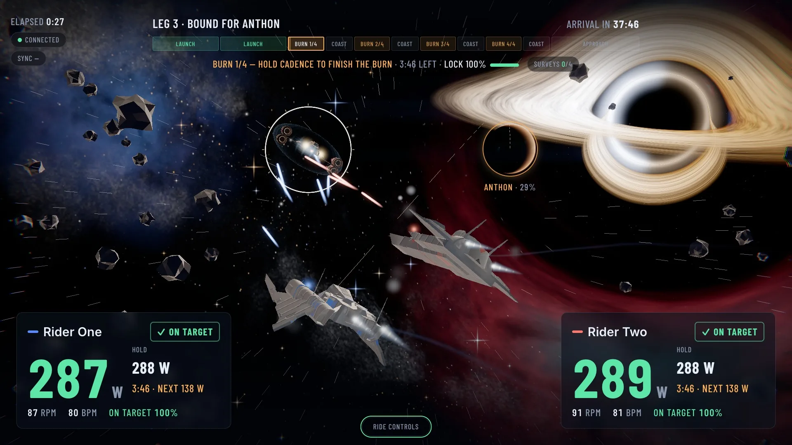
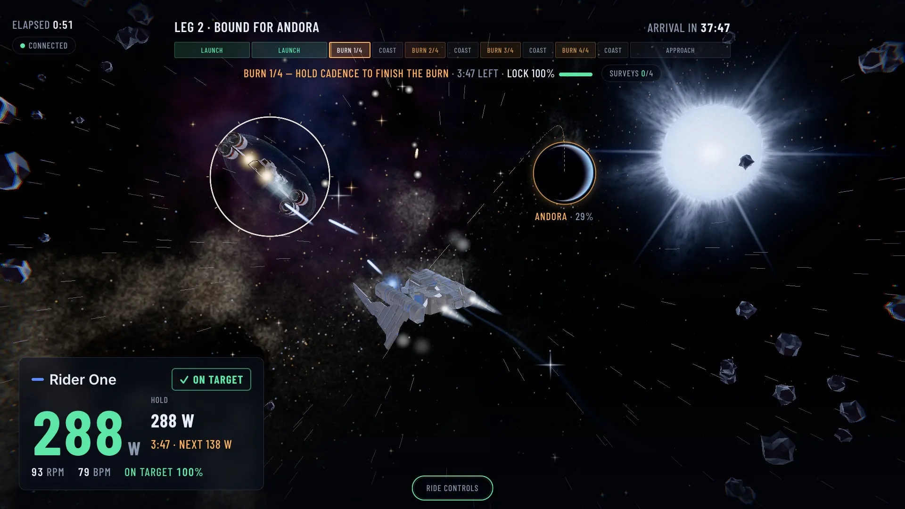
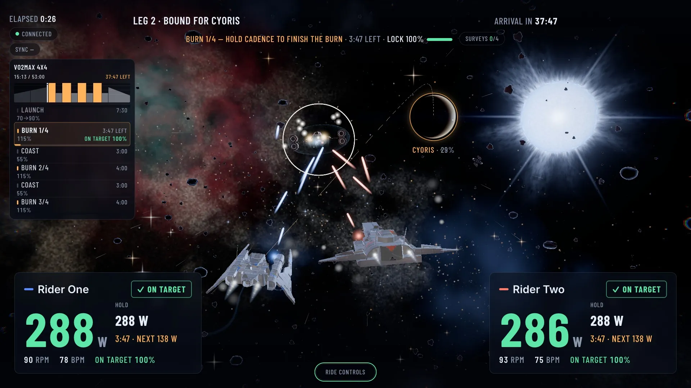
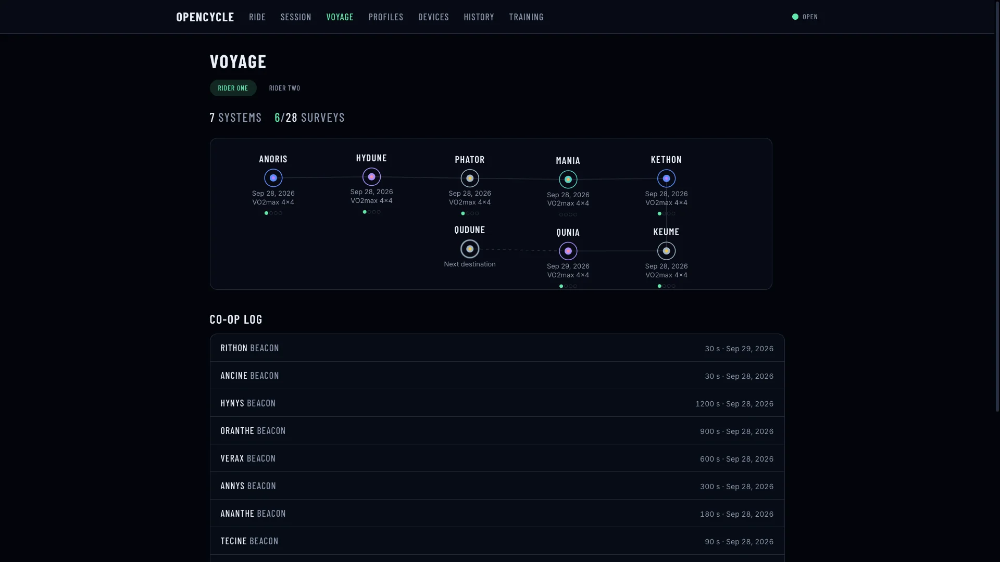
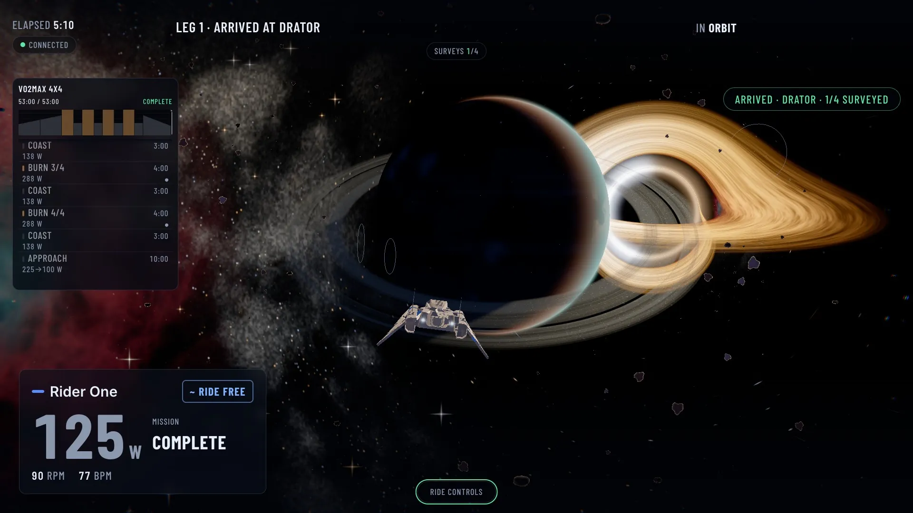

Recorded on the built-in simulator
The workout is the flight plan.
openCycle holds your KICKR at the watts the workout asks for, records every ride as a FIT file, and flies a fleet of ships to a new star system while you pedal.
MIT licensed · macOS and Node 24 · tested with a Wahoo KICKR CORE over Bluetooth FTMS ERG
A trainer controller, a recorder, and a game.
One app covers the indoor season: the trainer, the workout, the file that lands in Garmin, and the flight you watch while you ride it.

- ERG control
- Your trainer gets the target over Bluetooth FTMS ERG and holds it there. You pedal, and the resistance follows the workout step by step.
- Several riders, one machine
- Two or more riders can ride a session on the same computer, each with their own trainer, heart rate strap, targets and FIT file.
- A FIT file for every ride
- Every session is recorded as a standard FIT file. Download it from History, or let it upload to Garmin Connect.
- Workouts and plans
- Curated workouts and multi-week plan templates ship with the repo as JSON. Write your own, then check the whole library with one command.
- Garmin import and upload
- Drop a Garmin account export into the import folder to bring old rides back in. Turn on auto-upload in a profile, save a Garmin login once, and finished rides upload to Garmin Connect.
Every workout is a flight to a new system.
The ride screen is a voyage flown by the workout you are doing. Every system has something enormous to fly toward: a black hole bending the starlight around it, a blue supergiant or a binary pair. The trainer, the targets and the FIT file stay the source of truth: the game only reads them.
- Launchlaunch, 450 seconds
- Launchlaunch, 450 seconds
- Burn 1/4burn 1 of 4, 240 seconds, one survey
- Coastcoast, 180 seconds
- Burn 2/4burn 2 of 4, 240 seconds, one survey
- Coastcoast, 180 seconds
- Burn 3/4burn 3 of 4, 240 seconds, one survey
- Coastcoast, 180 seconds
- Burn 4/4burn 4 of 4, 240 seconds, one survey
- Coastcoast, 180 seconds
- Approachapproach, 600 seconds
A lit dot marks an objective leg: one survey chance. Cruise, climb and burn legs all count.
The mission clock
You arrive by finishing the workout. How hard you push changes what you find there, never whether you get there.
Surveys
Every cruise, climb and burn leg is one survey chance. Hold within 10% of the target for 85% of the leg, after a five-second settle once the leg starts, and the survey locks: a probe flies to the planet, and on arrival it lights a ring, a moon or a station. Going over target never counts.
Pursuits
Every burn is a chase. A raider warps in ahead of the fleet, and while you hold your target your ship fires at it and the lock builds. Finish the burn clean and the raider goes down; miss it and it jumps away. Nobody takes damage, and the lock only shows what the survey already measures.
Your star map
Each rider keeps a voyage: every system they have reached, with the surveys they locked, on a page of its own. The next destination is worked out in advance, so a planned workout already has a name.
Riding together
With two or more riders, everyone flies to the lead rider's destination and chases the same raider. Hold your zones together and a tether links the ships. When one rider's cadence drops away, another can cover: fifteen seconds at 10% over their own target, and a shield goes up around the struggling ship in the helper's color.



Hardware
The server runs on the computer next to the bike and talks to the trainer over Bluetooth. There is no account and nothing to sign up for.
- Trainer
- Tested with the Wahoo KICKR CORE over Bluetooth FTMS ERG control. Other FTMS trainers may work, but they are untested.
- Heart rate
- Any Bluetooth strap that uses the standard Heart Rate Service.
- Computer
- macOS and Node 24. The Bluetooth stack is a native addon, so the server runs on Node and not on Bun.
- Your data
- Rides and profiles live in a folder you choose:
~/.opencycleby default, orOPENCYCLE_DATA_DIR.
Run it
You do not need a trainer to try it. The simulator adds fake trainers and heart rate straps, so a session is one command away.
git clone https://github.com/rlfleming93/openCycle.git
cd openCycle
pnpm install
OPENCYCLE_SIM=2x2 OPENCYCLE_DATA_DIR=/tmp/opencycle-demo pnpm devOpen http://localhost:5173, create a profile, then start a session from the session builder. 2x2 means two simulated trainers and two simulated straps, and OPENCYCLE_DATA_DIR keeps the demo database and FIT files out of your real data folder. Requires Node 24 and pnpm 10.26 or later.
With a real trainer, set OPENCYCLE_BLE=1. On macOS, Bluetooth is denied to SSH and headless processes, so the README wraps the server in a small app bundle that gives it a stable identity once you approve it.
There is no login.
Anyone who can reach the server can start sessions, change profiles and read ride data. Run it on a home network you trust, and never expose it to the internet.
The server listens on all interfaces so a TV or tablet on your network can show the ride. OPENCYCLE_HOST=127.0.0.1 keeps it on this machine only.